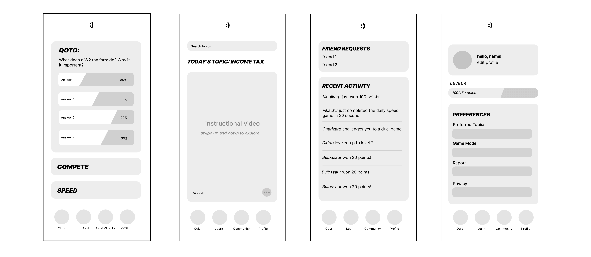
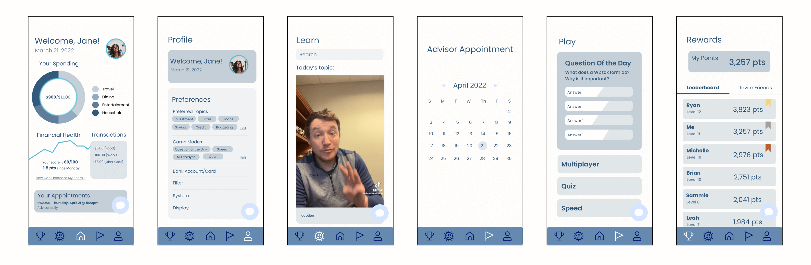

As a part of the Design for America (DFA) national project, I worked with Discover to explore the problem space of students entering financial independence.
I worked in a team of four students, from February to April 2022. My roles in this team were research, iteration, and visual design.
We began by immersing ourselves in the problem space. My teammates and I conducted 10 interviews and analyzed over 40 survey responses from college students across the country to understand the most common worries and struggles of entering financial indepdence.
Given our findings, we wanted to create a product that provide students a reliable source of information to support them and their finances.
Our team had three design goals when creating our product:
Throughout the ideation process, we made sure to keep all possibilities in mind. We began with over 50 ideas in a brainstorm, which we then processed down to three potential features to incorporate in our solution.
We then wireframed and built out mid-fidelity frames of each of these three features.
My team and I then conducted user testing with each of these three mid-fidelity products. In 10 interviews, we hoped to understand what elements of the app spiked user retention, and what features could enhance their learning experience.
These were some of our findings:
Taking our insights from the user testing sessions, we chose the strongest elements from each of the three iterations, and put them together in a mid-fidelity concept for our final deliverable.
This project ended in a demo day in which we presented our research and final concept to stakeholders at Discover. You can view the final product and presentation here!
